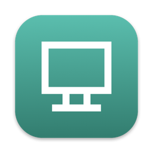

LiteWallpaper
A tiny, native live wallpaper for your Mac — and it stops when nobody's looking. 輕巧的 Mac 原生動態桌布，看不到的時候自動暫停，不浪費電。
Install in one line一行指令安裝
curl -fsSL https://raw.githubusercontent.com/Gary0302/LiteWallpaper/main/install.sh | zsh
Paste into Terminal. It downloads the latest version, installs it to Applications, and opens it — no security prompt. 貼到「終端機」執行即可。會下載最新版、安裝到「應用程式」並自動開啟，不會跳出安全性警告。
Or use the DMG或使用 DMG 安裝
- Download LiteWallpaper.dmg and drag the app into Applications.
- The first time, macOS blocks it because it isn't from the App Store. Right-click the app → Open.
- On macOS 15 or later: try to open it once, then go to System Settings → Privacy & Security and click Open Anyway.
- 下載 LiteWallpaper.dmg，把 App 拖進「應用程式」。
- 第一次開啟時 macOS 會阻擋（非 App Store 下載）。對 App 按右鍵 →「打開」。
- macOS 15 以上：先嘗試開啟一次，再到「系統設定 → 隱私權與安全性」按「強制打開」。
Why it's light為什麼這麼省電
Pauses when hidden被遮住就暫停
Windows covering the desktop or a full-screen app? Playback stops.視窗蓋滿桌面或開啟全螢幕 App 時自動停止播放。
Respects your battery顧及電池
Pauses in Low Power Mode, on battery (optional), and when the screen is locked or asleep.低耗電模式、使用電池時（可選）、螢幕鎖定或休眠時都會暫停。
One decoder, every screen多螢幕只解碼一次
A single shared player drives all displays, so extra monitors cost almost nothing.所有螢幕共用一個播放器，多接螢幕幾乎不增加負擔。
Tiny & native小巧原生
About 200 lines of Swift, under 1 MB, no dependencies. Lives in your menu bar.約 200 行 Swift、不到 1 MB、無任何依賴，住在選單列。
How to use使用方式
- Click the monitor icon in the menu bar → Choose Video… and pick any video file.
- From the same menu: pause/play, pause on battery, launch at login, and switch Language (English / 繁體中文).
- 點選單列的螢幕圖示 →「選擇影片…」，挑一部影片。
- 同一個選單可以暫停/播放、設定用電池時暫停、開機時啟動，以及切換「語言」（English / 繁體中文）。
Tip: for the lowest CPU/GPU use, encode videos as HEVC at your screen's resolution and ≤30 fps. 小技巧：影片轉成 HEVC、解析度與螢幕相同、30 fps 以下最省資源。